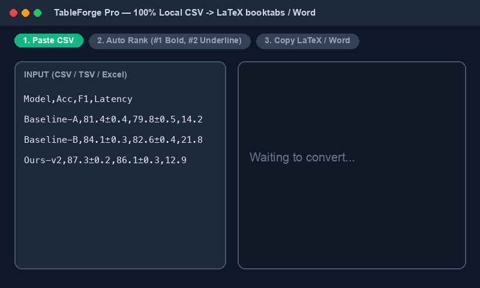

Auto-Format ML Ablation Tables in LaTeX with Bold #1, Underline #2 & Baseline Δ
Re-running one ablation seed at 2 AM before a NeurIPS or ICLR deadline often flips #1 and #2 across multiple columns — leaving silent bolding errors reviewers immediately spot.
Why Researchers & Engineers Use TableForge
- Deterministic per-column ranking parses numeric cores inside `87.3 ± 0.2` and ranks strictly by mean.
- Computes signed relative deltas (+3.2 / -1.3) against any chosen baseline row.
- Handles mixed metric directions (Acc ↑, BLEU ↑, Perplexity ↓, Latency ↓) in the same table.
- Pro CLI (`tableforge.py`) lets you regenerate all paper tables from experiment CSVs in 1 shell command.
Deterministic Ranking Even With ± Std Values
Input: 81.4±0.4 | 84.1±0.3 | 87.3±0.2
Parsed: mean=81.4 | mean=84.1 | mean=87.3
Ranked: normal | \underline | \textbf (+3.2 vs Baseline)Visual Walkthrough

Want offline Chrome Side Panel access, batch ZIP exports, or zero-dependency Python CLIs? Use starter code STARTER20 for 20% off any one-time Pro pack or the 6-tool bundle.
Frequently Asked Questions
How does ranking work when cells contain mean ± std?
TableForge extracts the primary numeric value before ± (or +/-) to determine #1 and #2 while keeping the full uncertainty intact in the output.
What if two methods tie for best?
Tied top entries receive consistent best-rank highlighting without dropping either entry.
Can I integrate this into my experiment script?
Yes — TableForge Pro includes a zero-dependency Python CLI (`cli/tableforge.py`) requiring no PyTorch or pandas.
Does it work offline on planes or restricted lab networks?
100% offline. No remote server calls are needed to convert tables.